Tip. Web or desktop app, either works. You can do everything in your web browser at claude.ai. If you’d rather use the desktop app, download it at claude.ai/download (opens in a new tab).
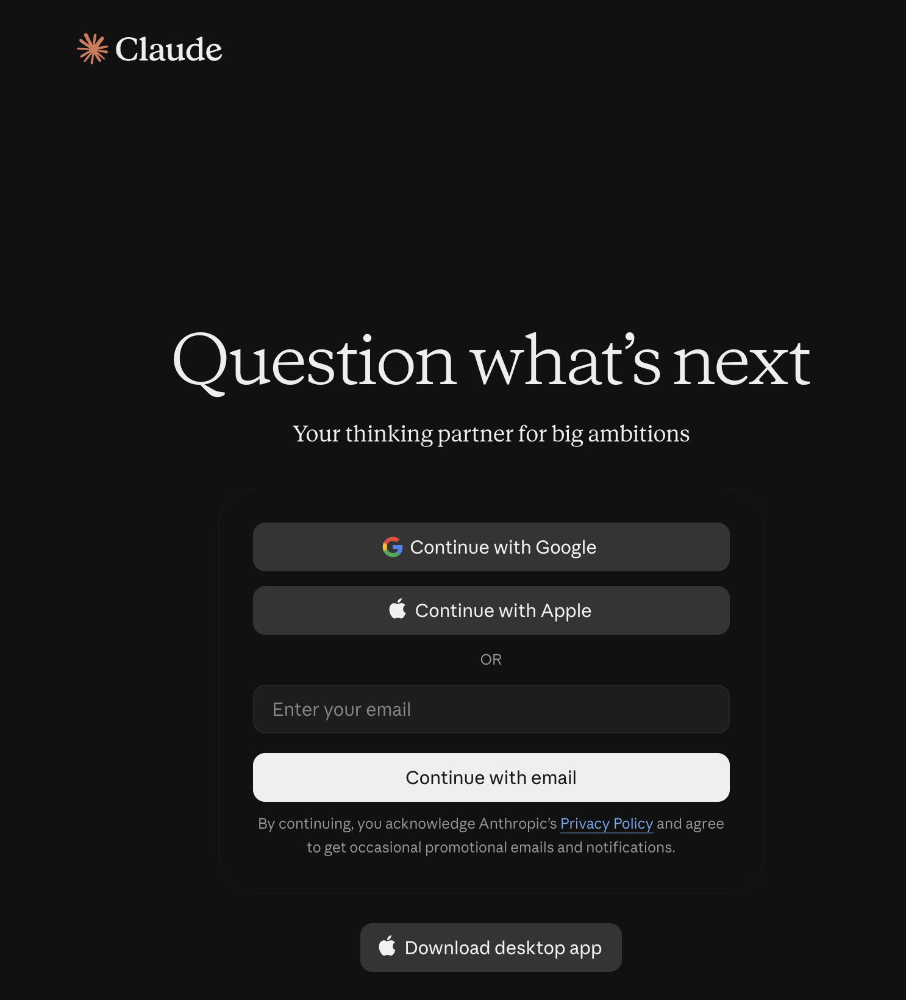
Sign up with Google, Apple, or your email, circled.
3Live exercise: Download the template and logo
The live exercise starts here. Follow along with Abhinav from this step on.
In this exercise you will make a presentation for the Junior League of Washington (JLW). Then you will teach Claude how you did it, so every future presentation comes out the same way.
First, download the two files below. You will upload them to Claude in a few minutes.
This download link goes live soon.
Tip. Save both files somewhere easy to find, like your Downloads folder or your Desktop.
4Connect Google Drive
A connector lets Claude use another app for you, like Google Drive. You add it once.
In Claude, click Customize in the left sidebar.
Click Connectors, then Discover.
Find Google Drive, or type it in the search box.
Click the plus on Google Drive.
Sign in to Google and allow access. A check mark means it is connected.
Tip. This step is required. Claude needs the Google Drive connector to save your finished presentation to your Google Drive.
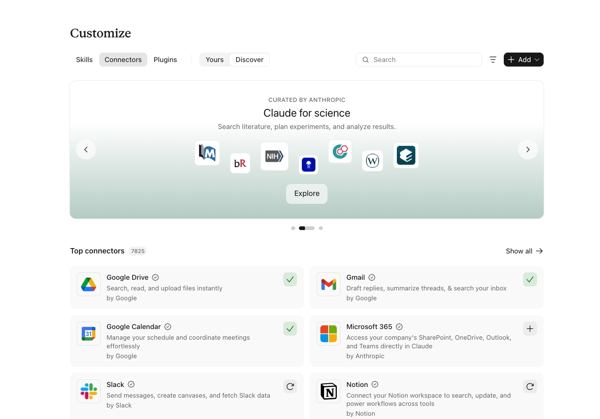
Google Drive, circled. The check mark means it is connected.
5Create a project
A project keeps all the conversations for one piece of work in one place. Claude remembers what you tell it inside a project, so you don’t have to explain the details again.
In the left sidebar, click Projects.
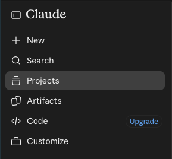
Click Projects, highlighted.
Click New project.
Under What are you working on?, type a name, like JLW Presentations.
Under What are you trying to achieve?, write a sentence or two, like Create consistent, on-brand presentations for the Junior League of Washington.
Click Create project.
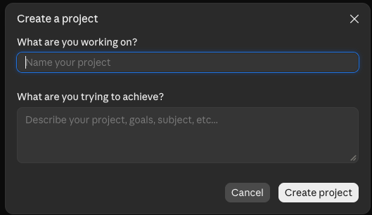
Name the project, describe the goal, then click Create project, circled.
6Stage 1: Interview
You will now work through five stages with Claude: interview, research, plan, review, and build. Each stage is one message from you. Together they get you to your first presentation.
Open your project and start a new chat inside it.
Click the + button in the message box and upload the template and the logo you downloaded.
Copy the prompt below, paste it into the message box, and send it.
Help me create a presentation on this topic following the uploaded template and logo.
Topic: Why volunteering builds women's leaders
Interview me - Ask me questions, one or two at a time, about who the audience is, what they already know, what I want them to think, feel, or do afterward, how long the talk is, and the tone. Ask follow-ups where my answers are vague. Wait for my answers. When you have enough, tell me you're ready to move on.
Claude will ask you questions, one or two at a time. Answer as if you were really giving this talk. Short answers are fine. If an answer is vague, Claude will ask a follow-up.
When Claude tells you it’s ready to move on, go to the next step.
Tip. Stay in the same chat for the rest of this exercise. Claude uses everything you have already said.
7Stage 2: Research
Now Claude looks up what matters for your audience and your goal, using current sources.
Copy the prompt below, paste it into the same chat, and send it.
Research the topic using current, credible sources, focused on what matters for this audience and goal. Collect the key findings and source links.
Claude will gather key findings and links to its sources. This takes a few minutes. Let Claude finish before you reply.
Tip. Skim the findings and open a link or two. You are the expert on your audience, so tell Claude if something doesn’t fit.
8Stage 3: Plan
Next, Claude turns the interview and research into a slide-by-slide outline. Because you uploaded the template, Claude can only use slide layouts the template really has. That keeps the deck on brand.
Copy the prompt below, paste it into the same chat, and send it.
Propose a slide-by-slide outline. Only use layouts the template actually has. Wait for me to approve or revise.
Claude will propose an outline and then wait for you. Do not approve it yet. Go to the next step to review it.
9Stage 4: Review
This stage has no prompt. It is your turn to be the editor.
Read the outline slide by slide. Is it the right length for your talk? Is anything missing, or in the wrong order?
If you want changes, reply in plain words. Claude will update the outline and show it to you again.
When you are happy with the outline, move on to the next step.
Tip. You can say things like Combine slides 3 and 4, Make the opening slide shorter, or Add a slide about a real volunteer story.
10Stage 5: Build
Now Claude makes the presentation.
Copy the prompt below, paste it into the same chat, and send it.
Go ahead and build the PowerPoint.
Claude will build a PowerPoint file using your template and logo. When it finishes, open the file and look it over. If something is off, tell Claude what to fix.
Heads-up. Building a deck can take several minutes. Let Claude finish before you reply.
That is your first presentation. Next, you will save the way you made it so you never have to explain it again.
11Turn the process into a skill
A skill is a set of instructions Claude saves and follows whenever you ask. You just did a five-stage process by hand. Now you will ask Claude to remember it.
In the same chat, copy the prompt below, paste it, and send it.
Now turn the process we just used into a reusable skill called "JLW Branded Presentation." Include the five stages (interview, research, read template, outline mapped to layouts with my approval, build and save to Drive). Make the interview adaptive, not tied to this topic. Include the template. Show me the skill before saving.
Claude will show you the skill it wrote before saving anything.
Click the skill to review it. If you want something different, tell Claude what to change.
Notice what Claude put inside: it saved your logos, wrote brand guidelines, and documented the whole process.
When you are happy, click Save.
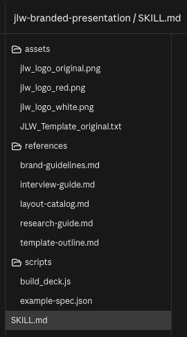
A skill is a small folder. Yours may look a little different from this one.
12Find your saved skill
Your skill is saved in the Customize area, where you also find connectors and plugins.
In the left sidebar, click Customize.
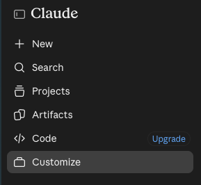
Click Customize, highlighted.
Click Skills, then Yours. Your skill is listed here.
Click it any time to read it or change it.
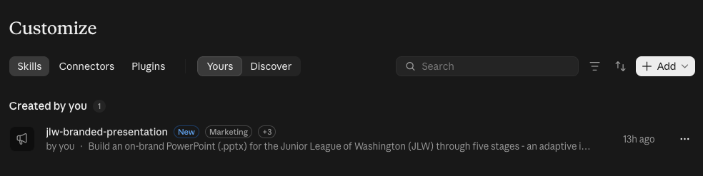
Customize, then Skills, then Yours. Your new skill is listed under Created by you.
13Use your skill in a new chat
Now see the payoff. You will make a different presentation without repeating any instructions.
Click New in the left sidebar to start a new conversation.
In the message box, type / to see your saved skills.
Click the skill you just made.
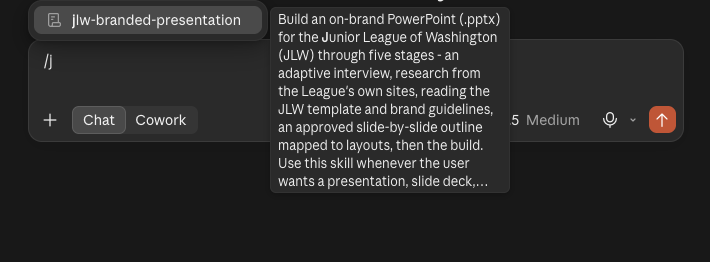
Type /, then pick your skill.
After the skill name, give Claude a topic. You can copy this one:
topic: How volunteer organizations can use AI to save time without losing the personal touch
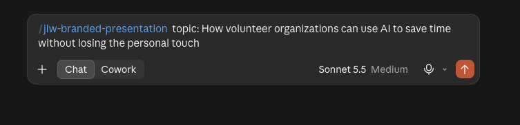
The skill name, then your topic. Press Enter to send.
Claude follows the same five stages you went through before, without you telling it again.
What’s next
This is the 101 on skills. If you are curious, search for Claude Skills on YouTube to learn more. Or come to another session and we can go deeper.
Click the + button in the message box to add files, photos, or other attachments to your message. It is also where you find extra tools, like Research and any skills you have added.
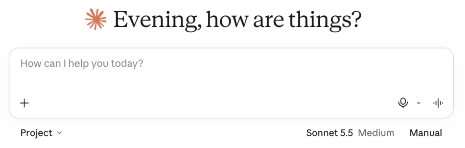
The plus button, circled.
Pick a model
Click the model name under the message box, like Sonnet 5.5, to choose which version of Claude answers you.
Fable 5.1: for your toughest challenges. Included in Max, or with usage credits on Pro.
Opus 5.5: for complex work and everyday tasks. Needs a paid plan.
Sonnet 5.5: most efficient for simpler tasks.
Haiku 5.5: fastest for quick answers.
Effort in the same menu sets how much thinking Claude does before it answers. Higher effort takes longer but is more careful.
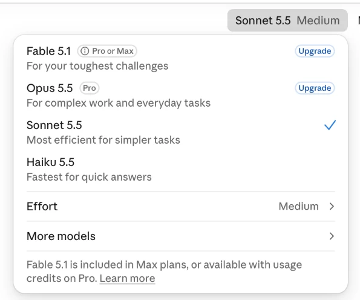
Click the model name, circled, to open this menu.
Choose how much Claude asks first
Next to the model is the Permission mode setting. It controls how much Claude checks with you before it acts.
Manual
Claude asks before using new tools or opening new sites.
Auto
Claude runs on its own and pauses to ask if anything looks unsafe.
Tip. Start with Manual for your first few tasks, so you can see each step before it happens.
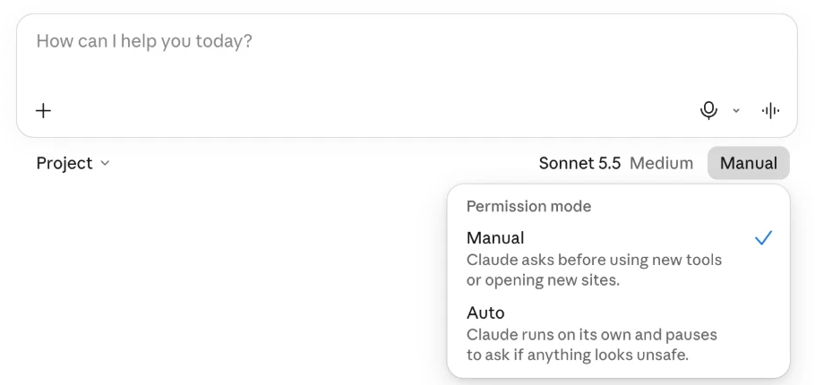
Click Manual or Auto, circled, to open this menu.
Customize: skills, connectors, and plugins
In the left sidebar, click Customize. This is where you give Claude new abilities. It has three tabs.
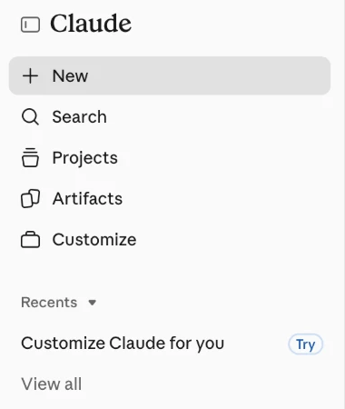
Customize, circled, in the left sidebar.
Skills
Instructions that teach Claude how to do a task your way, like writing in your organization's voice or formatting a report. Claude uses a skill on its own when a task calls for it.
Connectors
Links between Claude and the apps you already use, like Google Drive, Gmail, or Google Calendar. With a connector, Claude can find and work with your files, email, and events.
Plugins
Ready-made bundles of skills and connectors for one kind of work, like marketing or design. Install one and everything comes set up together.
These are what make Claude yours. Connectors give Claude your information, skills give it your way of working, and plugins package both. In the exercise, you will build your own skill.